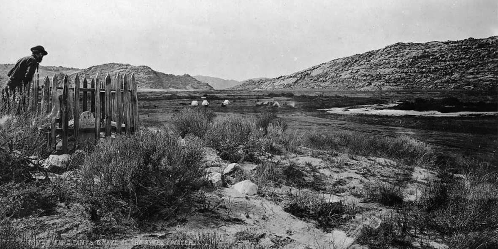
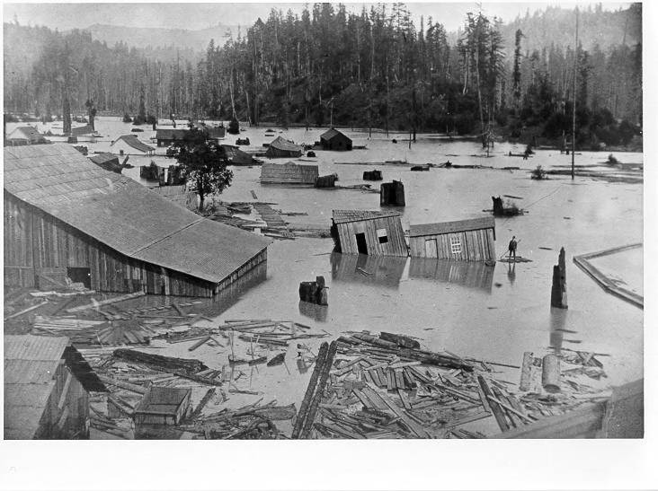
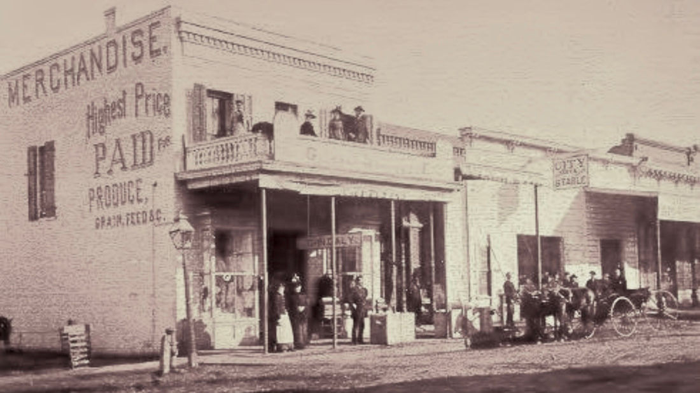
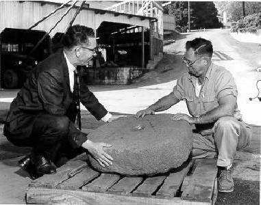

Legends, Rumors, and Miscellany
© 2020 Hannah Clayborn All Rights Reserved
|
History can't always be neatly worked into a flowing narrative. Like the miscellaneous windblown debris that ends up on your doorstep, what survives in the written record is often unrelated bits and pieces, memorable anecdotes and fragments told and retold over the years. Historians are wary of such anecdotes. As they are handed down by word of mouth, they tend to become embroidered and embellished. Yet each one tells us something about life in early Healdsburg. And who knows, some of them may even be true.
Missouri Moore and the First Gold Healdsburg pioneer, Mrs. Thomas Porter, born Missouri Moore, had several fascinating stories to tell about her journey to California in 1847 as a part of the 50-wagon train. Once when she was washing her hands in a stream near Sweetwater River, the tuft of grass upon which she knelt gave way, plunging her into icy water. Her riding skirt made of heavy denim material acted as a buoy as it billowed up around her. She believed it saved her life. On reaching California and the Yuba River, Missouri picked up an interesting chunk of rock about the size of her thumb. She put the rock, which was really gold, into her childish treasure bag along with other precious bits that she had gathered on the journey, and suspended it from the wagon. Later her father tossed the bag out in an effort to keep the families possessions streamlined. Had she held on to it she might now be credited with the great gold discovery that occurred one year later. Her honorable father paid her $100 to make up for tossing out her treasure. Missouri Ann Moore Porter was born in Boone County, Missouri in 1835, and married Thomas Alexander Porter in 1848, at the age of 13. She lived near Healdsburg on Eastside Road until she died in 1918. She is buried in Shiloh Cemetery.(1) |

Pioneer photographer William Henry Jackson passed Three Crossings, along the Sweetwater River, Wyoming, while with the U.S. government's Hayden Survey in 1870. This is Jackson's photo of Hayden artist S. R. Gifford inspecting the Tribbett pioneer grave along the Oregon Trail, perhaps a child who was not as lucky as Missouri Moore. (Perry Collection, Lee Library, BYU).
|
The First Store: Rolling on the River
Harmon Heald's store, opened near the site of the current Plaza in 1852, usually gets most of the attention in northern Sonoma County histories. But two other men opened a general store in the vicinity almost two years before Heald. E. Harrison Barnes and William Potter, for whom Potter Valley in Mendocino County is named, opened shop in an adobe six or seven miles below Healdsburg in 1850. That would place what is reputed to be the first store north of the city of Sonoma, about halfway between Healdsburg and Windsor, although it predated both towns. Lindsay Carson, brother of the famous Indian scout, "Kit" Carson, had built the adobe that housed that pioneer store the year before, on a ranch near the present Eastside Road, just below the junction with Old Redwood Highway. Partners Barnes and Potter soon moved, however, to a wooden building of their own, probably farther south on the River. By 1852 Carson had bought out Potter's share and settlers came ever more frequently along the old road that once cut northwest across the open country from Mark West to the Russian River. Business at the junction of the old Mark West and River routes (somewhere southwest of Windsor) was on the rise. The very next year, 1853, something else was on the rise. In 1914 pioneer John S. Williams vividly recalled the event: I suppose he [Barnes] was not aware that the river would ever dispute the right of way with him as to the ground it [the store] occupied. But to his possession the river asked no favors, as during one of the winters...it left its proper bounds and spread out from one foothill to the other, the result being that a store building with its valuable contents could be seen floating downstream, and was lodged in a brush thicket about three-quarters of a mile from its former site. They brought a couple of canoes into requisition and got such goods as were in danger of getting wet and housed them on dry land. I was a small boy then and of course I housed a few nuts and some candy. I got that much above high water mark to my credit. The old store building was brought up from its enforced resting place and placed out near the road above high water mark, only to remain a year or two, and then Mr. Barnes came to the conclusion that it would be a valuable acquisition toward enlarging the city of Windsor...the store building was placed on two wagons, the motive power being four yoke of Missouri steers. Everything went very nicely until they reached a point near the top of the hill, when from some unexpected cause it struck the limb of a tree, causing the center of gravity of the building to seek new quarters which was a heap of kindling wood on the ground. The old oxen seemed to be as much surprised at the sudden termination of affairs as the driver and others were. I think one could find pieces yet where the building lay some fifty years ago.  On March 6, 1879, Healdsburg photographer A.F. Alhands captured this image near Guerneville, looking toward Lone Mountain. (Sonoma County Library)
By the time E.H. Barnes tried to move the building, it had been empty for several years. An 1880 history recorded that the contents of the store, which had the good fortune of traveling down river in an upright position, were taken by flatboat to another building on the old A.B. Nalley Ranch, then owned by Lindsay Carson. Barnes and Carson ran the store there until they sold out to W.G. McManus in 1856.
McManus, who was in partnership with Ransom Powell, a wealthy local entrepreneur, moved the business to downtown Healdsburg. There the business occupied the town's second brick building, constructed at the southeast corner of the current North Street and Healdsburg Avenue. This was also the second general store in Healdsburg, later known as the John Daly Store. Several walls of this pioneer brick building are still standing on that same corner.(2) |

Healdsburg's second general merchandise store occupied the town's second brick building, built by McManus and Powell on the southeast corner of North and West Streets, (now Healdsburg Ave.). At the time this photo was taken, c. 1886, it was known as the John Daly Store. (Sonoma County Library; original Healdsburg Museum)
|
 City Manager Ed Langhart and Mayor Doug Badger accept the gift of the original millstone from the Alexander Ranch in 1965. It is now on display on the Healdsburg Plaza. (Sonoma County Library)Boll Weevil Whiskey
Cyrus Alexander, the first white settler in the area, had been growing wheat since the early 1840's, and had been milling his own flour since 1847. In 1851, he found that part of his wheat bin, one wall of which adjoined his residence, had heated and spoiled a good portion of the crop. Part of the wheat was also alive with weevils. Although his biographer portrays him as a Temperance man, Cyrus was not averse to helping out a neighbor who had no such convictions. It seems an old man named Miller (probably Valentine "Felta" Miller, for whom Felta Creek was named) had made his crossing to California a few years before with the rudimentary equipment for distilling liquor in tow. Until that time good grain was far too costly for old Miller to use for liquor. Cyrus and Miller dickered over the price of the spoiled wheat, finally settling on 10 cents per pound, upon which it became fodder for (perhaps) the first experiment with grain alcohol distillation in the region. Unfortunately nothing is recorded about the quality of that first batch of hootch, or whether the weevils enhanced or diminished its flavor.(3) Missouri Porter Remembers March and Heald's Mill
Several early anecdotes involve flour, for so many centuries the staff of life. Cyrus Alexander built a primitive mill to grind his own flour in 1847. The pioneer saw and gristmill built by Samuel Heald and W.J. March near the upper falls on Mill Creek was put into operation in September, 1850. Yet even after these early mills were in operation, flour was still scarce. In the winter of 1853 it was selling to hungry settlers for as much as $18 a sack. March and Heald's mill drew customers from as far away as Petaluma. Mrs. Missouri Porter remembered that in the early 1850's ox teams came by way of Sebastopol and Trenton to their ranch, on the east side of the river below Windsor. They would then ferry across the Russian River and plod up the hill to the mill. Mrs. Porter also recalled well the sight of her kitchen in winter, often crowded with men and their muddy boots, soaked to the skin, trying to dry themselves by her fire.(4) Legendre's Legend: the Frenchman's Mysterious Murder
In 1849 Louis Legendre, a native of France, built a cabin of rough hewn logs near the current Eastside Road, a few miles northwest of Windsor. This same land would later be known as the Hotchkiss Ranch. Legendre arrived in the vicinity in 1847. Louis later had the honor of building the first house from the milled redwood planks produced by March and Heald’s pioneer sawmill in 1850. This structure stood for many years on the old J.W. Calhoun ranch, also off Eastside Road due west from Windsor. Louis Legendre and his neighbor Lindsay Carson grew the first large-scale wheat crops in the region, which brought enormous profits in the early 1850's. Yet despite his early success, the Frenchman came to a sordid and mysterious end. He kept a large sum of money in his house, perhaps the proceeds of his bumper wheat crops. According to an 1880 history of the County this money, aroused the cupidity of a Mexican, who murdered him [Louis] for the booty, and compelled some Indians to bury him in one of his own fields. This Mexican was afterwards arrested but, effecting his escape, was never caught. Legendre's land eventually came into the hands of J.W. Calhoun, and Legendre's 1850 milled plank cabin formed one part of the Calhoun home for many years. When Calhoun's descendants tore down the old farmstead in more recent years, they found a rusted relic buried six inches deep under the original cabin. It was an ancient rapier, a slender sharp-pointed sword usually reserved for fencing, severely corroded by the passage of years. The Calhoun family passed down the legend that the man who allegedly killed Legendre was actually his business partner, and that he had dragged Legendre's body to the River. They speculated that this rapier might be the hastily discarded murder weapon. That assertion can never be proven of course, but just in case, the Healdsburg Museum added that rapier, a gift from Mary Calhoun Graham, along with the documented portions of Legendre's Legend, to its fine collection in 1989.(5) Dodgeburg? Dowville?
Before Healdsburg's founder, Harmon Heald, officially recorded his town in March of 1857, two other businessmen, William Dodge and William Dow, may have been planning a rival town just to the north of the Heald tract. After purchasing land north of the present North Street from the Fitch heirs in 1856, Dodge and Dow apparently laid out a town that was never officially recorded. The hotel built on this tract by a man named William Dorf was probably the first in the region. After Heald recorded his plat he must have come to some agreement with Dodge and Dow, for they were two of the first men to purchase town lots from Heald. But for that agreement we might be living now in Dodgeburg.(6) The Theft of the Sotoyome House
That first hotel, built in the "rival" town mentioned above, was named the Sotoyome House. Dorf soon sold out, and the hotel building eventually came into the possession of Jacob G. Heald (Harmon's brother) and John Rainey. The pair bought it only for the hotel furniture and sold the empty structure soon after to Henry Swain. Heald and Rainey built another hotel building farther south, in the center of Harmon’s thriving "downtown" Healdsburg. The new hotel opened in the summer of 1857, but apparently it had no name. At least not until Heald bought a pile of scrap lumber from Swain, that is. In that pile, unbeknownst to Swain, was the original hotel sign, lettered on a piece of redwood: The Sotoyome House. Jacob Heald, recognizing a bargain when he saw one, promptly erected the sign on his new establishment. This reportedly did not please Mr. Dorf in the least.(7) 
The Sotoyome House, in its second location, west side of West Street, (Healdsburg Ave.), c. 1874. Joseph Downing photo. (Sonoma County Library, original: Healdsburg Museum)
 Oak Mound Cemetery Fountain, c. 1876, Downing, Rea, Rauscher photo (Sonoma County Library) Oak Mound Cemetery Fountain, c. 1876, Downing, Rea, Rauscher photo (Sonoma County Library)
The Old Cemetery
When Harmon Heald's youngest brother, George, died on January 22, 1853, a decision had to be made about where to bury him. At that time the settlement of Heald's Store consisted of two or three modest buildings on what is now the 300 block of Healdsburg Avenue. They decided to lay George to rest under a cluster of madrone trees about a quarter of a mile away, judged at the time to be a safe distance from any future building sites. After the town was established four years later, this cemetery lot became the block bounded by South (Matheson), East, Tucker, and Fitch Streets. One source claims that the caskets were removed to the present Oak Mound Cemetery in 1858. Another states that in August 1863 the Sonoma County Supervisors granted George Shafer permission to remove all human remains in the old Burial Ground to Oak Mound Cemetery. What had once been a lonely cluster of madrones now lay in the heart of the city.(8) On the occasion of the installation of a water hook up at Oak Mound Cemetery and dedication of the fountain that still stands there, on July 9, 1876, Prof. Charles Hutton said: Eighteen years ago Oak Mound Cemetery was dedicated. I remember well what a lovely day of spring it was, when in this clime of ours, all nature makes surroundings so charming that it seems hard to die. This enclosure was then owned and had been laid out by Colonel Roderick Matheson, William M. Macy, and Ransom Powell.(9) Jennie Smith's Black Biscuits
In 1858 John and Aaron Hassett, brothers who had come to the area to work at March and Heald's mill, set about to alleviate the shortage of flour by building the largest grinding mill in the county, located near the southeast corner of the current Matheson Street and Healdsburg Avenue. As it was also the largest building in Healdsburg, the mill was quickly put to use even before the steam-driven mill machinery arrived. The opening exercises of the Russian River Academy were held in the spacious hall, and when the mill finally opened, on June 18, 1858, a grand ball celebrated the occasion. Jennie Smith later remembered getting the very first flour from that mill. Even though the pioneer issue was black with oil from the new machinery, it was so prized that it was used to bake a batch of biscuits as black as your hat(10) The First Sonoma County Fair
W.P. Ewing, who bought a tract of land from Harmon Heald that now includes the old Healdsburg railroad depot, held the first agricultural fair in Sonoma County on that spot in September, 1859. It was called the Agricultural and Mechanics' Society Fair, and first prize for corn meal that year went to Hassett's Flour Mill. One old-timer, J.S. Williams, remembered that first fair. He reported that the local Indian population attended in force, and that the townsfolk at the time were mostly Missourians. Ewing, who was a pioneer in the raising of racehorses in the County, later developed the first mill and resort at the Geysers. He died during the Civil War, fighting for the cause of the Confederacy.(11) [For more information about this fair see Festivals and Parades on this site.] Early Architecture
Most of the early cabins and houses in and around Healdsburg were modest structures often "designed" and built by amateur carpenters. In the tradition of the "first come, first build" American frontier, no section of town was set aside for business or residential purposes. Residences lined the main street and clustered in the commercial area on the east and south sides of the Plaza. According to one observer, T.F. Cronise in 1867, the majority of Healdsburg residents came from the southern United States (what we now call the deep south) and the "southwestern" states (meaning the block including Missouri, Kansas, Oklahoma, and Arkansas). Their origin, he noted, is indicated not more by the peculiarities of their manners than the style of their houses, most of which have huge chimneys built outside, after the custom of their early houses.(12) Cronise notices the difference between Healdsburg's early architectural style and the norm in California, which was overwhelmingly Yankee. The early southern home, like its northern cousin, developed from an English model, but rather than having an indoor chimney which helped to heat the other rooms, the warm southern climate favored exterior chimneys. These chimneys were wide enough at the bottom to enclose a great kitchen fireplace.(13) Although most of Healdsburg's early homes were copied from folk designs or later, catalog designs, there was a time in the 1860's and early 1870's when Healdsburg had a resident architect named William Henry Middleton. Middleton's most notable building still standing is the elegant Italianate at 211 North Street, built for entrepreneur Ransom Powell in 1870, and now known as the Camellia Inn. Middleton married a sister of George Guerne, for whom Guerneville is named.(14) |

|

Polly Reynolds House, 105 Fitch Street
|
The progression from an 1850s settler's cabin (above left) to a substantial home, like Polly Reynolds's house (above right) was the norm throughout California. By the mid 1860s, these simple two-story Greek Revival farmhouses, with an upper story verandah were ubiquitous. Usually the classical columns were squared to accommodate the use of redwood, and they had an L-shaped addition for a kitchen on one side. Often the new home was built on the same lot, and the original home served as an outbuilding. The classical home at right still stands at 105 Fitch Street. |

North Street looking east to Fitch Mountain
|

North Street looking west
|
|
The Good, the Bad, and the Undeclared
The California frontier drew every type of adventurer, dreamer, and hooligan. By the 1850's it was also luring a large number of stable, church-going families. In small towns like Healdsburg these two elements met in unaccustomed familiarity. With only a few shops, and precious little entertainment, they had no choice but to tolerate each other. One chronicler of the early years, W.T. Heald, tells us the following: Besides the Indians...there were two classes of people here who made up the population of the town...The one class consisted of those who had come to find themselves homes and to establish a civilized community. The other was composed of adventurers, rowdies, and gamblers. Cowboys, some of them Americans, some Indian, some Spanish...would flock into town and spend their time in gambling and carousing for weeks at a time. Dances would be given at which these would be brought into contact with the young men and women of the town. Mothers would go and take their knitting and knit while their children danced In all this whirl there was a constant pull from one class to the other. The gentler class had sufficient to do to contain itself, and not be drawn into the reckless life of the gambler and carouser. Indeed many were so drawn. And many [Healdsburg] families today live with a memory of some brother or some sister who slid to the lower strata of that early society never to regain their lost position.(15) Historians often have difficulty estimating the number of early saloons and brothels in small California towns, for they were rarely listed with pride the way general stores and livery stables were. As an example, in Healdsburg, we only discover the existence of a saloon with a "dance hall" above it when it is incinerated along with most of the other downtown buildings in1859.(16) Many years ago an older, wiser California historian gave me a rule of thumb: count the number of churches in any frontier town and that will be the probable number of saloons as well. I wasn't sure I believed him until I came across a description of Healdsburg in 1866. Written by a student at the public school, it honestly and innocently stated that Healdsburg had four churches and four saloons, although he quickly expresses his regrets about the latter, adding that four saloons is really quite moderate.(17) Great Debates on the Sabbath
Healdsburg has been a fairly religious town from the time of its founding and was able to boast of at least six churches by 1880. Like most other frontier settlements it also suffered from a lack of wholesome entertainment. These two conditions formed a happy convergence in 1889 when Elder Dudley Marvin Canright, formerly of the Seventh-day Adventist Church, came to town to deliver a series of lectures and Bible readings challenging the teachings of Adventist Church prophetess Ellen G. White. As a very young man Elder Canright had converted to the Adventist faith and was a protege of church leaders James and Ellen White. He broke away temporarily from the church several times over doctrine, his first and most serious misgiving being the Adventist belief that Saturday is the true Sabbath. Finally he renounced the entire faith in 1887, and vocally opposed church teachings. This tall man with a gaunt face might have passed himself off for an Old Testament patriarch, and the rich tones of his voice marked him as a born preacher. Elder Canright also enjoyed a good argument, for he contacted all of the appropriate leaders of every other religious denomination in Healdsburg, including the Adventists, and challenged them to a great debate on the subject of the true Sabbath. But the subjects debated between January and February 27, 1889, included literary theft and false revelations as well. Truitt's Opera House on Center Street (near the southeast corner of Center and Matheson Streets) could barely hold the capacity crowds that gathered there on five evenings. Hundreds remained standing or brought their own chairs. Each evening the debate opened with a prayer and closed with benediction, but between those two peaceful markers a firestorm of erudite debate warmed the drafty halls. Great excitement filled the room as each side waited for their particular champion to hurl righteous thunderbolts of quoted scripture. After all was said and done and the bills were all paid, each participant was more certain than ever that their Sabbath and revelations were the true and correct ones. Only the leaders of the Adventist church participated to defend their teachings, while the congregation itself was reportedly forbidden to attend. Elder Canright pocketed all the profits of the great debates and soon decamped for new ecclesiastical territories. He ended his life in 1919 as a Baptist, cared for by his daughter Genevieve, who had converted to Christian Science.(18)
 Flood waters at Highway Bridge, Healdsburg, 1937. (Sonoma County Library) Flood waters at Highway Bridge, Healdsburg, 1937. (Sonoma County Library)
The Flood of 1890
The Russian River, famous for regularly standing tall and spreading her swirling skirts over the land, rose to a particularly impressive height in the year 1890. On or about January 23 all of the lowlands near Healdsburg were inundated, and two young Healdsburg men, A.W. Garrett and Jim Petray, were called upon to make heroic rescues. When word reached town that two women were trapped in their house about a quarter mile south of Mill Street, the pair set off to the rescue in a rowboat. After reaching the house Garrett and Petray yelled, but their voices sank into the roar of the water rushing around them. Rowing close by a window, Garrett kicked out the glass and saw two women standing terrified on a tabletop with the water rising about them. One of the women was very large and when she reached her arms excitedly around Garrett's neck, both plunged into the murky water that filled the room. When she repeated her too-ardent embrace, putting both underwater a second time, Garrett resorted to knocking her over the head, rendering her unconscious and easier to squeeze through the window and into the boat. Meanwhile Petray anchored the boat by holding onto the window frame. The second woman, much younger and more slender, was cooperative and was easily hoisted into the boat. With all on board, however, they found the current too swift to row against, and so they drifted toward the area south of town by the depot. Once again in a panic, the large woman moved too quickly, overturning the boat and sending them all into the water. After hauling her to safety atop a pile of stacked lumber at Prince's Lumberyard, they could not find the younger woman. But Garrett saw a long braid of hair bobbing near the edge of a plank and yanked her quickly out of the water. They even succeeded in recapturing and righting their boat. Although safe, they were cold, drenched, and stranded atop an island of wood. Fortunately a man on horseback had come as far as the bridge (the site of the current highway bridge at Memorial Beach). Seeing that they needed help he threw them a rope, which they tied to their boat. Carefully they all climbed aboard and were pulled slowly to shore by the strong black horse. As if this were not excitement enough, Garrett and Petray were called out later that afternoon to rescue another family. These folks were all obedient, careful, and calm, and so were taken without incident through a second story window.(19) Endnotes
1. Heald, The Heald Family., 47. Find-a-Grave.com; Healdsburg Tribune, Enterprise, and Scimitar; No. 11, 2 December 1954. Find-a-Grave.com. Healdsburg Tribune, Enterprise and Scimitar, Number 11, 2 December 1954. 2. Munro-Fraser, History of Sonoma County, p. 358. Recollections of John S. Williams in the Russian River Recorder, Oct., 1977, Apr. 1977; also in Enterprise 31 Jan. through 21 Feb. 1914. Mrs. Temple Bailhache, "Early California and Settlement Around Healdsburg", in Enterprise 24 Sept. 1925. Thomas Heald, History of Healdsburg, in Enterprise 23 June 1906, 1:4. 3. Alexander, Life and Times, 98. Langart, Edwin, "Rear View Mirror", in Tribune 1 April 1976, B-7. 4. Heald, The Heald Family, 39, 47. Langart, Edwin, "Rear View Mirror", in Tribune 1 April 1976, B-7. 5. Munro-Fraser, History of Sonoma County, 358-360. Thompson, Sonoma County Atlas, 1877, 38. Information given by Mary Calhoun Graham, 1989, and Sara Lee Calhoun, 1992; see accession numbers 292 and 513 at the Healdsburg Museum. 6. Heald, The Heald Family, 15, 50. 7. Ibid. 8. Sonoma County Cemetery Records, 57, 75. Thompson, Historical and Descriptive Sketch of Sonoma County, 92. W.A. Maxwell "Early Healdsburg Memories" in the Tribune 2 April 1908 (1:3). 9. W.A. Maxwell "Early Healdsburg Memories" in the Tribune 2 April 1908 (1:3). 10. Russian River Recorder, Jan 1977, 2. "Interview with Aunt Jennie Smith", from the notes of W.T. Heald, Healdsburg Museum. Heald, The Heald Family, 19. Alexander, Life and Times, 66, 67. 11. Heald, The Heald Family, 29, 30. Russian River Recorder, Jan. 1977, 3. Account of J.S. Williams in Russian River Recorder, Oct. 1977, 3. 12. J.S. Williams in RRR April 1977, 3.] Cronise, Titus Fey, The Natural Wealth of California (S.F.: H.H. Bancroft ad Co., 1868), 167. 13. Marcus Whiffen, American Architecture Since 1780, A Guide to the Styles (Cambridge, Mass & London, England: M.I.T. Press, c. 1969), 4, 5. Hugh Morrison, Early American Architecture, from the First Colonial Settlements to the National Period. (N.Y.: Dover Publ., c. 1952, 139. 14. Ibid. 29. Clayborn et al, Historic Homes of Healdsburg #39. 15. Heald, The Heald Family, 51. 16. Munro-Fraser, History of Sonoma County, 219. 17. Democratic Standard, 14 Feb., 1866, 2:2. 18. Shipley, Tales of Sonoma County, 28. Seventh day Adventism Renounced: A Course of Lectures and Bible Readings announced, Healdsburg Enterprise, Volume XIII, Number 36, 30 January 1889. Some of Mrs. White’s Revelations, Healdsburg Enterprise, Volume XIII, Number 41, 6 March 1889. Literary Theft, Healdsburg Tribune, Enterprise and Scimitar, Volume 1, Number 52, 16 March 1889. Wikipedia. 19. Account told by J.A. McMinn in Healdsburg Museum Archives. |